Say pal, you don't look so good...
This page lists Maxwell's quotes , which are spoken when the player examines an in-game object, or during certain in-game events. The player can alt-click items and objects to examine them.
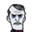 Maxwell (Base Game) 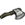 Axe- "Sometimes the direct approach is best."
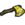 Luxury Axe- "It gets sharper with every cut."
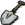 Shovel- "This is some real advanced technology."
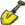 Regal Shovel- "This shovel is worth a princely sum."
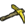 Opulent Pickaxe- "This must be game logic."
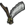 Razor- "If only the world had a single neck."
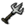 Pitchfork- "The tool of choice for perfectionists."
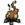 Campfire (upon being built)- "Sure beats darkness."
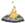 Fire Pit (upon being built)- "Sure beats darkness."
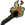 Torch- "It keeps Charlie at bay."
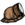 Miner Hat- "Eventually the firefly will starve."
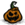 Pumpkin Lantern- "Why hello, Mr. Crane."
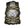 Lantern- "I hope this keeps Them away."
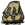 Backpack- "I wish there were porters around here."
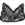 Bird Trap- "They keep falling for it!"
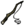 Fishing Rod- "I will eat for a lifetime."
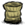 Straw Roll- "I don't like sleeping rough."
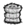 Fur Roll- "At least they're good for something."
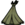 Tent- "That's a bit rustic for my taste."
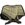 Trap- "Only the dumbest animals will fall for this."
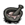 Healing Salve- "Just a bit of venom and some dirty old ash."
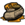 Honey Poultice- "Sticky and gooey and good for putting on booboos."
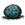 Heat Stone- "A pocketful of heat."
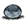 Heat Stone (cold)- "It's useless when cold."
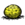 Heat Stone (warm)- "Comfortably warm."
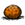 Heat Stone (hot)- " It's almost too hot to hold."
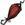 Umbrella- "It's crooked!"
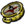 Compass- This quote is dependant on the orientation of the map. Potential lines include: North, Northeast, East, Southeast, South, Southwest, West, Northwest.
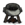 Crock Pot- "Just the thought makes my mouth water."
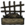 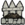 Basic Farm and Improved Farm- "Do I look like a farmer?"
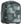 Ice Box- "A little piece of winter in a box."
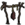 Drying Rack- "I can dry meats so that they last longer."
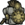 Science Machine- "I can't believe I forgot how to build these things."
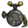 Alchemy Engine- "It unlocks recipes of middling utility."
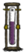 Winterometer- "Not the most useful invention isn't it?"
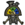 Rainometer- "I could also just look up to learn the same thing."
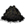 Gunpowder- "Now this, I like."
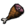 Hambat- "An undignified weapon for a less refined time."
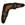 Boomerang- "Beats getting your hands messy."
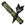 Blow Dart- "A glorious tube of pain-giving!"
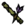 Sleep Dart- "Call me Mr. Sandman."
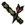 Fire Dart- "Just make sure to breathe out."
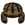 Football Helmet- "Now I am ready for the scrimmage."
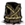 Log Suit- "Ugh, I'm not one for such vulgar fisticuffs."
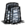 Marble Suit- "That really isn't my style."
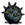 Bee Mine- "They wait so patiently."
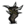 Tooth Trap- "This one packs a punch."
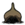 Shelmet- "This will keep me standing. If I need to fight.
Evergreen- "I've heard them described as 'piney'."
Evergreen (chopped)- "That's not about to grow back."
Evergreen (burning)- "Oops."
Evergreen (burnt)- "Ashes to ashes."
Lumpy Evergreen- "It looks sickly."
Log- "It's a piece of wood, what more is there to say?"
Log (burning)- "Well, that was fun while it lasted."
Charcoal- "Nothing will steal my carbon!"
Pinecone- "A more outdoorsy type might be able to make something of this."
Baby Evergreen- "A more outdoorsy type might be able to make something of this."
Spiky Tree- "A tree with a foul demeanor."
Spiky Tree (chopped)- "Tree 0, Maxwell 1."
Spiky Tree (burning)- "There it goes."
Spiky Tree (burnt)- "It's no use to anyone now."
Marble Tree- "How whimsical."
Totally Normal Tree- "What's his problem?"
Living Log- "I like the sound they make when they burn.
Sapling- "A supple, woody stem."
Sapling (picked)- "It'll grow back."
Sapling (burning)- "Oops."
Sapling (picked up)- "Do I look like a gardener?"
Twigs- "Common, but useful."
Grass Tuft- "Tufty."
Grass Tuft (picked)- "Already harvested."
Grass Tuft (barren)- "Needs manure."
Grass Tuft (burning)- "Oops."
Grass Tuft (picked up)- "Do I look like a gardener?"
Cut Grass- "The mundane stuff of the earth."
Berry Bush- "Reduced to eating berries. Sigh."
Berry Bush (picked)- "And now we wait."
Berry Bush (barren)- "It needs manure."
Berry Bush (burning)- "Reduced to eating berries. Sigh."
Berry Bush (picked up)- "Do I look like a gardener?"
Reeds- "There's wind in them there willows."
Reeds (picked)- "No more tubes."
Reeds (burning)- "Oops."
Cut Reeds- "I think I could build something useful from this."
Plant- "Leafy!"
Plant (growing)- "It's growing."
Plant (ready to be picked)- "It's ready."
Marsh Plant- "What a generic little plant."
Spiky Bush- "It's twisted and thorny, just like me!"
Spiky Bush (after picking)- "I scratched my arms up doing this."
Flower- "I am filled with the irrational urge to stomp upon it."
Petals- "Like so much confetti."
Evil Flower- "I like that flower."
Dark Petals- "It's dripping with nightmare essence."
Red Mushroom (unpicked)- "It's a red mushroom."
Red Mushroom (unpicked, sleeping)- "I'll have to come back for it."
Red Mushroom (picked)- "It's all used up."
Green Mushroom (unpicked)- "Green Fungus."
Green Mushroom (unpicked, sleeping)- "When do those ones come up?"
Green Mushroom (picked)- "Been there, done that."
Blue Mushroom (unpicked)- "The blue ones are good for something."
Blue Mushroom (unpicked, sleeping)- "It's not ready."
Blue Mushroom (picked)- "Another time, maybe?"
Bee Hive- "Not the bees!"
Killer Bee Hive- "That looks dangerous."
Honeycomb- "It's full of bee seeds"
Hound Mound- "It's a tunnel down to the hound nests."
Bone- "Hungry devils, aren't they?"
Touch Stone- "There's a story behind that..."
Harp Statue- "Not my best work."
Marble Pillar- "I've always wondered who built those."
Marble- "It's strong stuff."
Merm House- "They copied the pigs, but they're even less intelligent."
Merm Head- "The eyes follow you around."
Pig Head- "Erm...charming."
Pig Torch- "Great. Now they have fire."
Basalt Boulder- "I made a rock so heavy that I can't lift it."
Boulder- "It's a rock."
Rocks- "Hmmm. Now what do I do with them?"
Flint- "Ow! I cut my finger!."
Nitre- "One third of the way there..."
Gold Nugget- "This was important to me once."
Headstone (1)- "It says milk. Eggs. Bacon."
Headstone (2)- "Here lies some guy. Blah blah blah."
Headstone (3)- "Hey, that's my name!"
Headstone (4)- "This headstone is blank."
Grave- "What lies beneath?"
Grave (dug)- "Already got that one."
Suspicious Dirt Pile- "That looks out-of-place."
Animal Tracks- "Some dumb beast passed through here."
Animal Tracks (lost its trail)- "Drat! It got away."
Animal Tracks (found)- "I smell dung and beast-sweat."
Wooden Thing- "My beautiful machine is in pieces!"
Wooden Thing (partially assembled)- "It is still incomplete."
Wooden Thing (fully assembled)- "It's alive!"
Ring Thing- "This is the quantum field guard band."
Crank Thing- "This is used to agitate the humours."
Box Thing- "This is a box full of sadness and woe."
Metal Potato Thing- "The gears in here are so small they turn the fabric of reality."
Wormhole (closed)- "It's worse knowing what the other part looks like."
Wormhole (open)- "I can assure you that it smells worse than it looks."
Wormhole (exited)- "Yech. It's horrible in there."
Pond- "I can see my face reflected off the top."
Skeleton- "Ha! I remember that one."
Spider Den- "They grow big here."
Spider Egg- "Squishy."
Rabbit Hole- "There's a world going on under there."
Walrus Camp- "The Walrusser can't be far."
Walrus Camp (Summer)- "I best not linger when winter comes."
Rope to Surface- "Get me out of here!"
Red Mushtree- "Where's Waldo?"
Green Mushtree- "Ugh, it smells bad."
Light Flower- "It's so dark down here."
Light Bulb- "It will run out eventually."
Stalagmite- "Rocks. How dull."
Stalagmite (pointy)- "Stalagmite. How dull."
Spilagmite- "How did that get down here?"
Slurtle Mound- "That's revolting."
Rabbit Hutch- "Oh, isn't that clever."
Barrel- "What a disgusting home."
Fern- "I'd like to step on it."
Foliage- "A meal fit for a peasant."
Cave Banana Tree- "It looks like a banana, but I'm not buying it."
Ancient Pseudoscience Station- "Where are their gods now?"
Broken Clockworks- "Mechanical refuse."
Relic- "Remnants of an extinct civilization."
Cave Lichen- "Only a cyanobacteria could grow in this light"
Ornate Chest- "It's a trap."
Nightmare Light- "The over-use of fuel was their downfall."
Thulecite- "An exceedingly rare but useful material."
Thulecite Wall- "An ancient wall."
Thulecite Wall (item)- "Pocket sized wall pieces. Yup."
Clockwork Knight- "Such quality worksmanship!"
Clockwork Bishop- "I'm especially proud of that piece."
Clockwork Castle- "A castle for my home."
Damaged Knight- "It looks beyond repair."
Damaged Bishop- "They degrade without proper upkeep."
Damaged Rook- "The builders have left it in a state of abandonment."
Charlie (the darkness monster)- "Charlie? Is that you? It's me! Maxwell!"
Charlie (attacked by)- "OW Charlie! That hurt."
Hound- "They don't recognise me!"
Red Hound- "I put fire gems in there as a joke."
Blue Hound- "I had a lot of surplus gems!"
Hound's Tooth- "This could be used for fashion."
Spider- "It's mostly digestive system."
Spider (sleeping)- "Sssh! It will wake up hungry."
Spider (dead)- "Haha!"
Spider Warrior- "It's a specialized form."
Spider Warrior (sleeping)- "I don't want to wake that one."
Spider Warrior (dead)- "Good riddance!"
Spider Gland- "Distasteful."
Silk- "Despite it's origin, it could make some fine garments."
Krampus- "You won't catch me!"
Krampus Sack- "It's really light."
Merm- "They were here when I got here."
Tentacle- "I'm glad the rest of it is down there."
Tentacle Spike- "Ugh. This is so revolting."
Tentacle Spots- "This is how they reproduce."
Big Tentacle (Tentapillar)- "This one is odd."
Baby Tentacle- "Babies?"
Pig Guard- "Blech. Disgusting brute."
Werepig- "That one's gone feral."
Ghost- "It remembers me!"
MacTusk- "Don't you recognise me?."
Wee MacTusk- "A chip off the old block."
Walrus Tusk- "I'll put this to better use."
Tam o' Shanter- "Made in Scotland."
Mosquito- "Bloody blood sucking blood suckers."
Mosquito (picked up)- "I got him."
Nearby Mosquitoes-
Cave Spider- "It's a tricky one."
Spitter- "Aggressive little thing, isn't it?
Batilisk- "Ugh. Ugly beasts."
Snurtle- "That's strange. That must be new."
Slurtle- "I don't remember that being down here."
Slurtle Slime- "There must be a better way."
Broken Shell- "They don't fit back together."
Lureplant- "A vicious plant."
Fleshy Bulb- "Perhaps I can use this to my advantage."
Eye Plant- "The meat bulb's pawns."
Slurper- "Simple creatures. They exist only to sleep and feed."
Dangling Depth Dweller- "Creatures in this world evolve at a terrifying rate."
Depths Worm (emerged)- "Well that's new!"
Depths Worm (lure)- "You aren't fooling me, plant."
Depths Worm (burrowed)- "Something stirs."
Tallbird- "These were a failed experiment."
Tallbird Nest (empty)- "It's made of dirty beefalo hair."
Tallbird Nest (with egg)- "Well. That's tempting."
Tallbird Egg- "Tallbirds are territorial because of these things."
Tallbird Egg (cooked)- "It tastes like broken dreams."
Hatching Tallbird Egg- "We've got a live one here."
Hatching Tallbird Egg (dead, eating the egg)- "That tastes about as good as you would expect."
Hatching Tallbird Egg (too hot)- "Hot enough for ya?"
Hatching Tallbird Egg (too cold)- "It's getting tepid."
Smallbird- "What!? What do you want?"
Smallbird (hungry)- "You want some food?"
Smallbird (starving)- "He's so hungry!"
Smallish Tallbird- "It's less cute now that it's grown up."
Smallish Tallbird (hungry)- "They sure do eat a lot!"
Smallish Tallbird (starving, attacking)- "A hungry beast is a dangerous beast!"
Pecked by a Smallish Tallbird- "Have Patience!"
Treeguard (Leif)- "Disgusting creature!"
Spider Queen- "Maybe I'll just get out of her way."
Spider Hat- "Spiders have such malleable wills."
Deerclops- "Even I am afraid of that guy."
Deerclops Eyeball- "Deerclops are myopic."
Ancient Guardian- "My my, the fuel has changed you."
Guardian's Horn- " I'm sorry I had to do that, old friend."
Maxwell- "Lookin good!"
Pig King- "That's a man with his priorities in order!"
Wes (trapped)- "He displeased me."
Abigail- "Why won't just these mortals stay dead?"
Bird Egg- "I like to think of it as a baby bird prison."
Bird Egg (cooked)- "Sunny side up."
Monster Meat- "How revolting."
Cooked Monster Meat- "I'll eat it if I have to."
Monster Jerky- "My teeth are getting too old for this."
Meat- "I'm used to much finer fare."
Cooked Meat- "It smells less like barnyard, now."
Leafy Meat- "A feeble attempt to trick the weaker minded."
Cooked Leafy Meat- "The heat has made this a suitable meal."
Jerky- "My teeth are getting too old for this."
Drumstick- "It tastes strangely like berries."
Fried Drumstick- "Still tastes like berries."
Fish- "Fresh from the murky depths."
Cooked Fish- "It still stinks"
Eel- "They only exist in the depths."
Cooked Eel- "It will have to do."
Morsel- "This is barely a mouthful."
Cooked Morsel- "Well, at least it's not moving anymore"
Small Jerky- "My teeth are getting too old for this."
Koalefant Trunk- "Full of summer mucus."
Winter Koalefant Trunk- "The trunk thickens in the winter to hold more mucus."
Koalefant Trunk Steak- "At least the mucus burned off."
Frog Legs- "Muscular."
Cooked Frog Legs- "Stringy."
Batilisk Wing- "I'm not eating that."
Cooked Batilisk Wing- "I'm still not eating that."
Corn- "High in fructose."
Popcorn- "A little more refined, at least."
Carrot (planted)- "How mundane."
Carrot (picked)- "I'm not a fan of vegetables."
Roasted Carrot- "A little more refined, at least."
Pumpkin- "Halloween was always my favourite."
Hot Pumpkin- "A little more refined, at least."
Eggplant- "Just another boring plant."
Braised Eggplant- "A little more refined, at least."
Red Cap- "I forget what this one does."
Cooked Red Cap- "Kind of bitter."
Green Cap- "I should eat it."
Cooked Green Cap- "Salty!"
Blue Cap- "What could go wrong?"
Cooked Blue Cap- "Umami!"
Glow Berry- "What a neat trick."
Lichen- "Dry, crumbly, sustaining."
Turkey Dinner- "How festive."
Powdercake- "What foul product of science is this?"
Most recipes- "My compliments to the chef!"
Seeds- "I suppose these won't plant themselves."
Seeds (specific)- "This labour is beneath me."
Roasted Seeds- "I broiled the life out of 'em."
Honey- "Sticky and sweet."
Butterfly Wings- "Ha ha ha. I got him!"
Butter- "Some puns are irresistible."
Rot- "That used to be food until I wasted it."
Rotten Egg- "Disgusting. Why am I carrying this around?"
Blueprint- "I know all about that. I just forgot."
Gears- "My pets! What has become of you?"
Ash- "A fine powder that smells of destruction."
Red Gem- "Red brings fire."
Blue Gem- "Blue brings ice."
Yellow Gem- "I can feel the magic in this."
Green Gem- "The nightmare fuel will unlock its true potential."
Orange Gem- "It will be quite powerful with some fuel."
Beard Hair- "Hirsute."
Manure- "It's the way of all mortal life."
Guano- "Disgusting!"
Melty Marbles- "This was important to someone once."
Fake Kazoo- "This was important to someone once."
Gord's Knot- "This was important to someone once."
Gnome- "This was important to someone once."
Tiny Rocketship- "This was important to someone once."
Frazzled Wires- "This was important to someone once."
Ball and Cup- "This was important to someone once."
Hardened Rubber Bung- "This was important to someone once."
Mismatched Buttons- "This was important to someone once."
Second-hand Dentures- "This was important to someone once."
Lying Robot- "This was important to someone once."
Dessicated Tentacle- "This was important to someone once."
Codex Umbra- "I'm so sorry Charlie."
Codex Umbra (Not enough fuel)- "I need some nightmare fuel."
Codex Umbra (Not enough sanity)- "I have a headache!"
Maxwell Statue-
"NOUNLOCK"- "Ah, I am a fool. I had dared to hope."
Battlecry- "To arms!"
Battlecry (prey)- "You look tasty!"
Battlecry (Pig)- "Brains over brawn!"
Hungry- "I am empty inside."
Leaving combat- "And stay away!"
Leaving combat (prey)- "You're not worth my time!"
Leaving combat (Pig)- "Next time, pig!"
Activated a Bee Mine- "Killing me won't bring back your honey!"
Dusk- "It'll be dark soon. Charlie will be waking up."
Entering light- "The light is back."
Entering darkness- "It's dark! I can't see!"
Doing things in the dark-
Failed to do something- "That didn't work."
Failed to craft something- "Er... I can't do that."
Trying to sleep during the day- "I can't sleep in the day."
Trying to sleep when too hungry- "I'm too hungry. I can't sleep."
Trying to sleep near monsters- "Not while there's danger afoot!"
Hounds are coming- "The hounds are getting restless."
Deerclops is coming- "I hear the deerclops."
Inventory full- "My pockets are full."
Eating (stale food)- "That was past its due-date."
Eating (spoiled food)- "That was putrid."
Eating (painful food)- "Ow! That hurt my mouth."
Earthquake- "That doesn't sound good."
Unimplemented Maxwell (Reign of Giants) Tools Lights Survival Food Science Fight Structures Turfs Refine Magic Dress Nature - Plants Nature - Objects Mobs - Monsters Mobs - Neutral Animals Mobs - Passive Animals Mobs - Tallbird Family Mobs - Bosses Mobs - Other Food - Meats Food - Fruits Food - Vegetables Food - Crock Pot Food - Other Misc Items Announcements When examining a pig house , he says "I'll huff and puff!" This is a reference to the popular children's story "The Three Little Pigs".
"Not the bees!" and "Killing me won't bring back your honey!" are probably references to a famous Nicholas Cage movie, "The Wicker Man."
"I will eat for a lifetime" Is a reference to the "Give a man a fish and he will eat for a day" saying.
Upon examining the Dark Sword, Maxwell says "Snicker-snack!" referring to the Vorpal Blade in Through The Looking Glass .
Maxwell's quote on the razor is "If only the world had a single neck", likely a reference to the notorious serial killer Carl Panzram, who when hanged for his crimes in 1930, allegedly spat in the executioner's face and said, "I wish the entire human race had one neck, and I had my hands around it!". Maxwell's quote may also refer to Caligula , who said, "Utinam populus Romanus unam cervicem haberet!" ("Would that the Roman people had but one neck!")

{kind=link}
{kind=link}
{kind=link}
{kind=link}